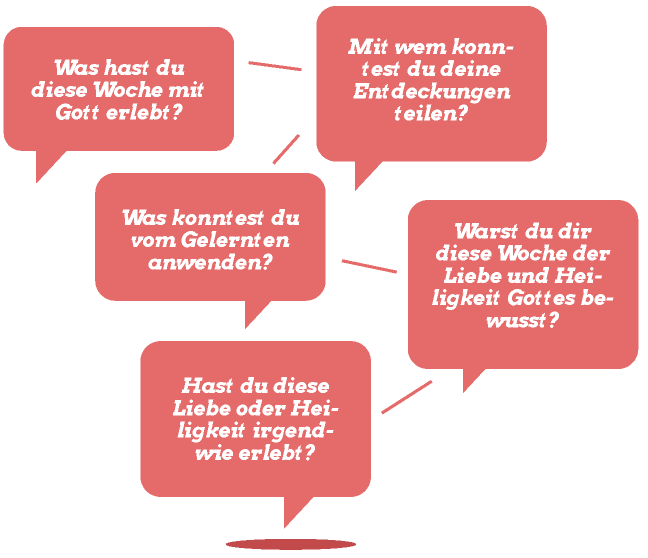

Diagnose – wer bin ich?
In dieser Lektion geht es um uns – den Menschen und was die Bibel über den Menschen sagt. Sind wir auch so heilig wie Gott? Leben wir auch so moralisch richtig wie er? Wie beschriebet ihr die Menschheit? Findest du, die Menschheit ist gut?
Plant für diese Lektion 50 Minuten ein.
Austauschen
Tauscht zuerst einmal zusammen aus:
Entdecken
Am Anfang war
In der Bibel steht ganz am Anfang, dass Gott den Menschen geschaffen hat. Man liest in der Bibel: 1. Mose 1, 26-31.
Toggle Biblequote1. Mose 1, 26-31

Gott spricht über dem Menschen aus: Er ist sehr gut. Das hält Gott von dir – sehr gut (Vers 31). Denn er hat den Menschen als sein persönliches Ebenbild geschaffen (Vers 27). Als ein Gegenüber zu ihm (Vers 26). Doch was bedeutet dieses Wort: Ebenbild? Dazu ein kleines Video:
playVideo Ebenbild (bis 1:47.
Wir Menschen sind von Gott als sein Ebenbild dazu befähigt, zu herrschen (Vers 28) über diese Welt und über alles, was er geschaffen hat. Davon schreibt auch Psalm 8.
Psalm 8 anzeigenPsalm 8
Dieser Psalm beschreibt, wie Gott dem Menschen den Auftrag gibt über sein Werk zu herrschen. Gott vertraut dem Menschen alle Tiere und die ganze Natur an um für sie zu sorgen. Das ist ein gigantischer Auftrag.
Wie gut machen wir diesen Job? Erfüllen wir den Auftrag von Gott?
Die Welt wie wir sie kennen
Wird ein Blick in die Welt hinaus gemacht, so muss die Frage mit Nein beantwortet werden. Nebst all den Fortschritten, die der Mensch gemacht hat, zerstört er aber die Welt auch mit all den Kriegen. Viele Tiere sind ausgestorben. Doch warum ist es so?
Die Bibel beschreibt, dass der Mensch schlecht ist.
Psalm 14, 2-3: Der HERR schaut vom Himmel auf die Menschenkinder, dass er sehe, ob jemand klug sei und nach Gott frage. 3 Aber sie sind alle abgewichen und allesamt verdorben; da ist keiner, der Gutes tut, auch nicht einer.
Die Bibel ist sehr hart. Es sagt, es gibt keinen der gut ist – auch nicht einen. Woher kommt das?
Auflehnung
Schon kurz nach dem der Mensch geschaffen war, hat er sich gegen Gott aufgelehnt. Er hat Gottes Anweisungen nicht gehorcht (1. Mose 3, 1-6). Das war ein Vertrauensbruch. Damit hat der Mensch die Beziehung zu Gott zerstört.
1. Mose 3, 24. Und er trieb den Menschen hinaus und ließ lagern vor dem Garten Eden die Cherubim mit dem flammenden, blitzenden Schwert, zu bewachen den Weg zu dem Baum des Lebens.
Dies hat bis heute Auswirkungen. Auch der heutige Mensch gehorcht nicht den Anweisungen von Gott. Oder bist du da anders?
Wenn du dir da nicht ganz sicher bist, dann führe doch mal diesen kleinen Selbsttest durch:
Selbsttest
Die Bibel sagt, jeder Mensch ist sündig. Damit ist gemeint, dass der Mensch Fehler macht. Ja noch mehr, die Bibel bezeichnet jedes Handeln, welches die Beziehung zu Gott stört, als Sünde.
Eine Sünde, eine schlechte Tat alleine reicht schon um alles zu verderben, um die Beziehung mit Gott zu stören.
Es kann verglichen werden mit einer schönen Vase aus Glas. Wird die Vase auch nur ein Mal auf den Steinboden fallen, so ist sie zerbrochen – zerstückelt in hundert Teile. Man kann sie nicht einfach wieder flicken oder zusammennähen – sie ist kaputt. Genau so ist es mit der Beziehung zu Gott. Nur schon eine kleine Sünde zerstört die Beziehung.
So sieht die Bibel den Menschen: Einerseits geschaffen als ein Ebenbild Gottes – als sehr gut. Weil der Mensch aber nicht nach Gottes Willen verhält, ist er sündig und schlecht. Dadurch kann er keine Beziehung pflegen zu Gott, der heilig ist.
Und trotzdem schreibt die Bibel:
Jesaja 57, 15
Wie kann das Gott vereinen? Weit weg, in unnahbarer Heiligkeit zu wohnen? Und trotzdem unter den sündigen Menschen zu sein? Diese Fragen sind das Thema der nächsten Lektion.
Tun
Was hat Gott zu mir gesprochen
Wie setze ich das konkret um?
Gebet
Schliesst eure Zeit mit Gebet ab und erzählt Gott, was euch beschäftigt.
Gratuliere!
Das war Kapitel 2. Weiter geht es mit dem Thema „Wer ist der Mensch“.
Macht doch dafür gleich einen Termin ab!